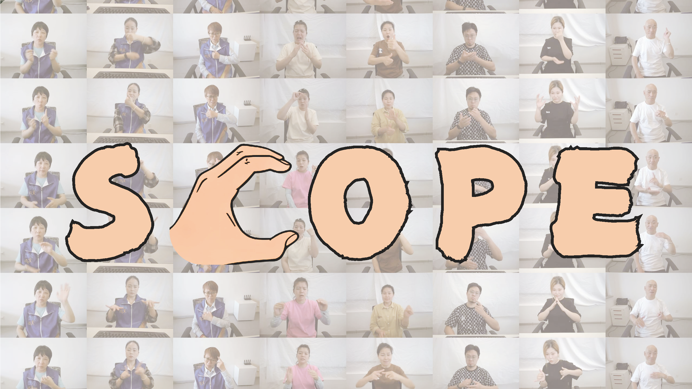

Wenqian Zhang

Research

SCOPE: Sign Language Contextual Processing with Embedding from LLMs
Yuqi Liu*, Wenqian Zhang*, Sihan Ren, Chengyu Huang, Jingyi Yu, Lan Xu
Proc. of AAAI, 2025

BOTH2Hands: Inferring 3D Hands from Both Text Prompts and Body Dynamics
Wenqian Zhang, Molin Huang, Yuxuan Zhou, Juze Zhang, Jingyi Yu, Jingya Wang, Lan Xu
Proc. of CVPR, 2024

InterGen: Diffusion-based Multi-human Motion Generation under Complex Interactions
Han Liang, Wenqian Zhang, Wenxuan Li, Jingyi Yu, Lan Xu
International Journal of Computer Vision (IJCV), 2024
Education
VDI Center, ShanghaiTech University M.S.
Sep 2022 - present
Computer Science, ShanghaiTech University Bachelor
Sep 2018 - July 2022